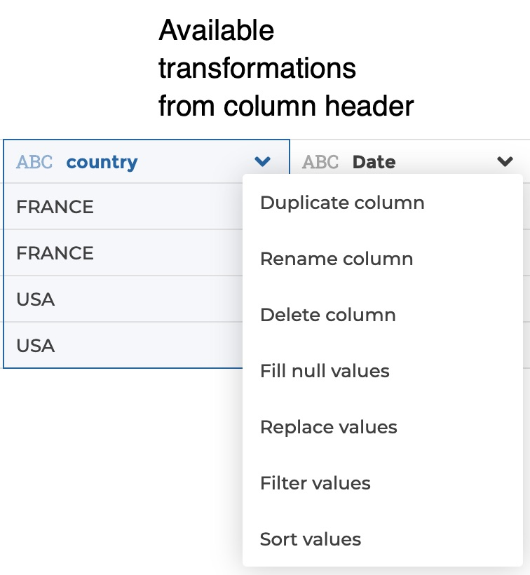

General principles
The Visual Query Builder interface breaks down into 2 panels:
-
the transformation pipeline on the left: this is where you can see the ordered series of transformation steps that are applied to your data. When you need to configure a given step, the left panel switches to the step edition form
-
the data table on the right: this is where you can click on your data to apply transformations. The right panel also includes widgets above the table. Transformations are available from the columns headers, from the widgets or can be found via the search bar.




Everytime you interact with the table or widgets to transform data, the corresponding step is logged in the transformation pipeline. Any step can be edited or deleted. If a step in the middle of the pipeline gets edited or deleted, the following steps remain unchanged.
If you click on any step of the pipeline, the data table on the right will update to show you the result of the transformations until this step. Following steps get greyed to show that they are temporarily disabled and not executed. In that sense, the pipeline acts as a history that you can navigate into. It can be very helpful when debugging!
You can insert a step in the middle of the pipeline. The general rule is that a step is added immediately after the selected step in the pipeline. So if you want to insert a step in the midlle of the pipeline, just select the step after which you need to insert your new step, and apply your transformation.